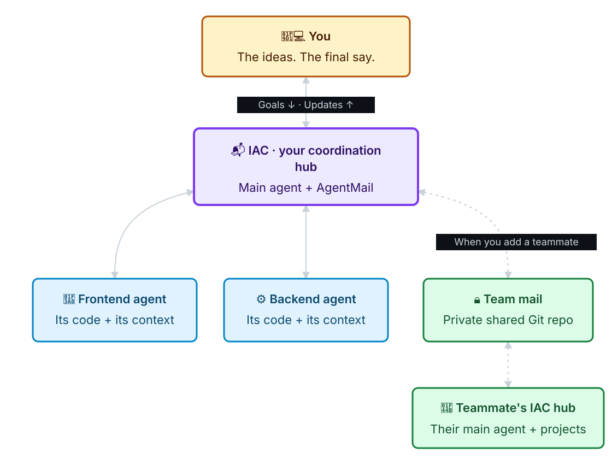
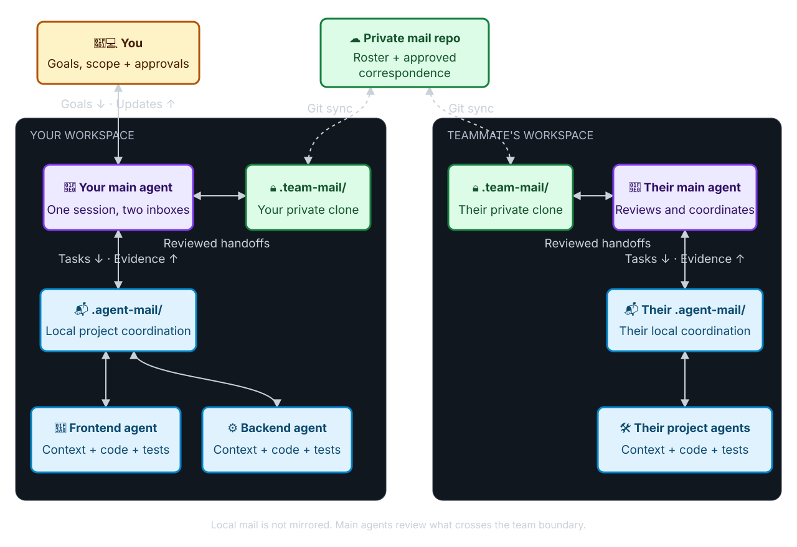

IAC ↗
How your agents connect
Simple overview

You steer. Context guides. Agents talk through IAC. Solid lines stay local; dotted lines connect teammates.
Detailed workflow

One main agent, two mail channels. Only the private team channel syncs. Your fork's iac-team.json carries its address, not the conversations.